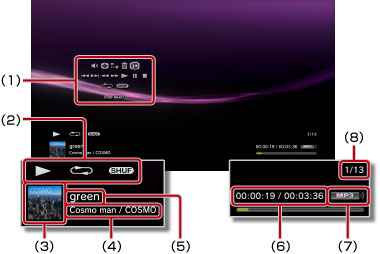

Musik > Använda kontrollpanelen
Använda kontrollpanelen
Du kan utföra olika funktioner med kontrollpanelen på skärmen. Kontrollpanelen kan visas eller döljas genom att trycka på knappen  .
.
Volymkontroll

Justera volymen vid uppspelning av innehåll under  (Musik). Du kan välja en av nio nivåer.
(Musik). Du kan välja en av nio nivåer.
Tips!
Ljudet kan förvrängas om volymnivån är för hög. Sänk nivån om detta händer.
Visuell spelare
Välj en av flera bakgrunder som visas under uppspelningen av innehåll.
Tips!
Du kan inte ändra Visual Player-bakgrunder när innehåll i  (Foto) eller
(Foto) eller  (Webbläsare) visas.
(Webbläsare) visas.
Lägg till i spellistan
Lägg till en musikfil till spellistan.
Tips!
Endast musikfiler som har sparats på din hårddisk kan läggas till i en spellista.
Radera
Radera musikfiler.
Tips!
Endast musikfiler som har sparats på din hårddisk kan raderas.
Visa
Visa status och annan information under uppspelning. Informationsalternativen varierar beroende på vilket innehåll som spelas upp.

(1) |
Kontrollpanel |
|---|---|
(2) |
Statusikon |
(3) |
Spårikon |
(4) |
Namn på artist/album |
(5) |
Spårnamn |
(6) |
Spelad tid/total tid |
(7) |
Codec |
(8) |
Spårnummer/totalt antal spår |
Föregående
Gå till början av det aktuella eller föregående spåret.
Nästa
Hoppa till början av nästa låt.
Snabbspolning bakåt/Snabbspolning framåt
Snabbspola innehållet som spelas upp framåt eller bakåt. Om du trycker in och håller ned  -knappen> kommer innehållet att snabbspolas framåt eller bakåt så länge som knappen är nedtryckt.
-knappen> kommer innehållet att snabbspolas framåt eller bakåt så länge som knappen är nedtryckt.
Spela upp
Starta uppspelningen av innehåll.
Paus
Gör paus i uppspelningen.
Stopp
Stoppa uppspelningen
Upprepa
Spela upp innehållet upprepade gånger. Du kan välja ett av tre upprepningslägen genom att trycka på -knappen.
 |
Spela upp ett innehållsalternativ upprepade gånger. |
|---|---|
|
Spela upp allt innehåll upprepade gånger. |
| Ingen visning | Töm upprepad uppspelning och spela allt innehåll i ordning. |
Blanda
Spela spår i slumpvis ordning.